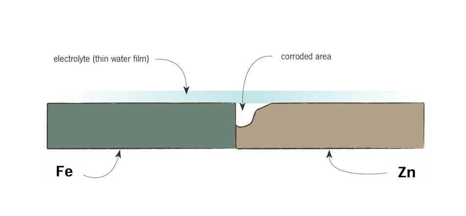

Engineers categorize corrosion into eight main forms. The most critical ones include:
This occurs uniformly over the entire exposed area of the metal, such as a piece of iron rusting in the atmosphere. Approximately 30% of all corrosion failures are due to uniform corrosion.
Occurs when two different metals are in contact in a corrosive environment. The metal situated lower on the Galvanic Series (more active/negative) becomes the anode and corrodes, while the other is protected. The Area Effect: The smaller the anode is relative to the cathode, the more severe the localized corrosion will be.

Galvanic corrosion can occur within a single piece of metal if there is an oxygen imbalance. For example, a steel pipe partly immersed in water will eventually deplete the oxygen below the water level. Because the submerged area has lower oxygen, it becomes the anode and begins to corrode severely just below the waterline.
If a crevice (a narrow crack or opening like a riveted joint) is in contact with liquid, it experiences restricted convection. The crevice becomes depleted of oxygen, acts as the anode, and corrodes heavily.
This process is highly destructive because it is autocatalytic. If the water contains salts (like NaCl), metal chlorides hydrolize to form acids inside the crevice (M+Cl- + H2O → H+Cl- + MOH). The formation of this acid drastically increases the rate of corrosion.
Watch the video below to understand the fundamental electrochemistry driving different forms of corrosion: